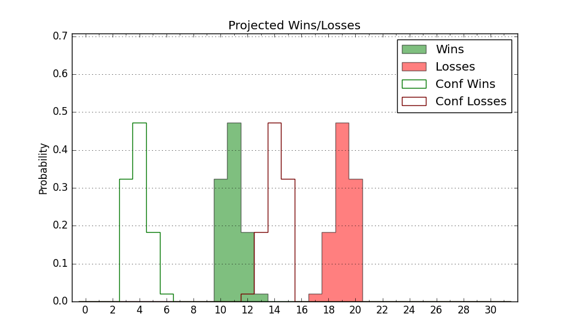

| Home | Game Probabilities | Conferences | Preseason Predictions | Odds Charts | NCAA Tournament |
| City: | Bronx, New York | |
| Conference: | Atlantic 10 (15th)
| |
| Record: | 3-12 (Conf) 10-17 (Overall) | |
| Ratings: | Comp.: -5.9 (232nd) Net: -5.9 (232nd) Off: 104.0 (213th) Def: 109.9 (237th) SoR: 0.0 (113th) |
| Remaining | ||||||
|---|---|---|---|---|---|---|
| Date | Opponent | Win Prob | Pred. | |||
| 3/1 | Saint Joseph's (82) | 25.7% | L 72-80 | |||
| 3/5 | George Washington (142) | 46.3% | L 74-75 | |||
| 3/8 | @ Rhode Island (130) | 18.4% | L 74-85 | |||
| Previous | Game Score | |||||
| Date | Opponent | Win Prob | Result | Off | Def | Net |
| 11/4 | @St. John's (22) | 2.4% | L 60-92 | -2.8 | 0.3 | -2.5 |
| 11/9 | @Seton Hall (201) | 29.9% | W 57-56 | -9.6 | 18.6 | 9.0 |
| 11/12 | Binghamton (298) | 78.7% | W 78-63 | -5.0 | 11.5 | 6.5 |
| 11/15 | @Manhattan (279) | 47.5% | L 76-78 | -11.6 | 6.2 | -5.4 |
| 11/22 | Drexel (202) | 59.4% | L 71-73 | 3.5 | -10.5 | -6.9 |
| 11/25 | (N) Penn St. (64) | 11.8% | L 66-85 | -3.5 | -1.1 | -4.7 |
| 11/26 | (N) San Francisco (62) | 11.3% | L 64-85 | 2.5 | -21.8 | -19.3 |
| 12/1 | New Hampshire (356) | 92.3% | W 83-61 | -6.0 | 8.7 | 2.7 |
| 12/4 | Fairleigh Dickinson (309) | 80.4% | W 84-75 | -2.9 | 3.9 | 1.0 |
| 12/8 | Maine (212) | 61.3% | W 87-72 | 10.2 | 9.2 | 19.5 |
| 12/14 | (N) Bryant (151) | 33.6% | W 86-84 | 0.2 | 4.0 | 4.2 |
| 12/21 | Albany (293) | 78.0% | W 87-83 | -0.1 | -6.4 | -6.4 |
| 12/31 | Saint Louis (104) | 35.7% | L 63-88 | -11.5 | -18.7 | -30.2 |
| 1/4 | St. Bonaventure (102) | 35.1% | L 66-86 | 0.1 | -20.8 | -20.7 |
| 1/8 | @VCU (32) | 3.2% | L 61-73 | 3.0 | 16.0 | 19.0 |
| 1/11 | @Davidson (143) | 20.4% | L 64-74 | -19.4 | 13.9 | -5.5 |
| 1/15 | Massachusetts (209) | 60.7% | L 118-120 | 4.6 | -9.4 | -4.8 |
| 1/22 | @Loyola Chicago (121) | 16.7% | L 66-70 | 7.0 | 4.3 | 11.3 |
| 1/26 | Duquesne (160) | 50.3% | W 65-63 | -1.8 | 5.7 | 4.0 |
| 1/29 | @La Salle (251) | 39.7% | W 88-72 | 23.5 | 6.2 | 29.8 |
| 2/1 | @St. Bonaventure (102) | 13.7% | L 72-74 | 20.3 | -8.6 | 11.6 |
| 2/5 | Rhode Island (130) | 43.4% | W 80-79 | 8.2 | -2.6 | 5.6 |
| 2/12 | Dayton (77) | 24.7% | L 76-93 | 9.8 | -29.1 | -19.3 |
| 2/15 | @Richmond (243) | 38.7% | L 66-70 | -2.0 | 1.6 | -0.4 |
| 2/19 | @Duquesne (160) | 22.9% | L 64-73 | -7.6 | 3.5 | -4.1 |
| 2/22 | Davidson (143) | 46.7% | L 69-80 | -12.9 | -0.7 | -13.6 |
| 2/26 | @George Mason (78) | 8.8% | L 64-74 | 1.9 | 6.0 | 7.9 |
| Stats & Trends | |||||
|---|---|---|---|---|---|
| Current | Day | Week | Month | Season | |
| Composite | -5.9 | +0.3 | -0.1 | +1.1 | -6.6 |
| Comp Rank | 232 | +2 | -4 | +5 | -89 |
| Net Efficiency | -5.9 | +0.4 | -0.1 | +1.6 | -- |
| Net Rank | 232 | +2 | -2 | +13 | -- |
| Off Efficiency | 104.0 | +0.1 | -0.2 | +3.2 | -- |
| Off Rank | 213 | +2 | -8 | +33 | -- |
| Def Efficiency | 109.9 | +0.3 | +0.1 | -1.6 | -- |
| Def Rank | 237 | +5 | +6 | -11 | -- |
| SoS Rank | 136 | +18 | +14 | +67 | -- |
| Exp. Wins | 10.9 | -0.0 | -0.6 | +0.0 | -3.6 |
| Exp. Conf Wins | 3.9 | -0.0 | -0.6 | +0.0 | -3.9 |
| Conf Champ Prob | 0.0 | -- | -- | -- | -1.7 |

| Advanced Stats | ||
|---|---|---|
| Stat | Value | Rank |
| Off Eff FG % | 0.498 | 206 |
| Off Ast Ratio | 0.144 | 190 |
| Off ORB% | 0.300 | 147 |
| Off TO Rate | 0.157 | 248 |
| Off FT Ratio | 0.347 | 127 |
| Def Eff FG % | 0.522 | 216 |
| Def Ast Ratio | 0.140 | 118 |
| Def ORB% | 0.288 | 192 |
| Def TO Rate | 0.147 | 179 |
| Def FT Ratio | 0.381 | 302 |